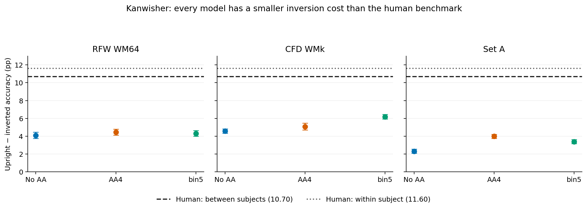

Four VGG16-BN models
A comparison of saved Yin results, with the human profile always visible. Select a protocol, calibration set, and category to compare four models at a time. Final epoch 124 · one training seed · 50 Yin simulation seeds.
The three protocols
| Protocol | UU | II | UI | IU |
|---|---|---|---|---|
| single_uu | p1/p1 | p1/p1 | p1/p1 | p1/p1 |
| two_cross | p1/p1 | p2/p2 | p1/p2 | p2/p1 |
| two_shared_ui | p1/p1 | p2/p2 | p1/p1 | p2/p1 |
Entries are study/test bit-flip rates. p1 is fitted on UU; p2 is fitted independently on II. U = upright; I = inverted. calibrated_on chooses the rates; category is what gets evaluated.
Dots are means. Hover a dot for model mean, seed SD, and signed human difference. Human benchmarks use different stimuli; “Objects” refers to the repository’s airplane benchmark. No human uncertainty is implied.
| Model | Protocol | calibrated_on | Category | Epoch | UU | II | UI | IU | MAE (pp) |
|---|
Scoring and uncertainty
Table cells show mean ± SD over 50 simulation seeds. Four-cell MAE includes fitted cells; it measures total resemblance, not independent prediction. The face UI/IU score excludes both calibration cells and permits the same comparison across all three protocols. All simulations use one trained checkpoint per model. No significance claim or participant uncertainty is inferred from seed variation.
All 72 final face-calibrated combinations are available. Four own-category calibrations and four earlier snapshots are preserved separately. The missing own-category runs for no-AA and bin5 are not imputed. The newest two_shared_ui rows are assembled from saved, matching cells without rerunning simulations.
Interpretation
Closest final face values: VGG2k AA4, two_cross, RFW. Strongest candidate for the human ordering: mixed-face AA4, two_cross, RFW. Its IU is lower than II, as in the human data, but the gap remains too small. See the full report for the separate across-category ranking and earlier checkpoint results.
Face calibration does not solve the house deficit or excess object accuracy. Own-category fitting substantially improves levels, but is a different calibration setting.
Latest Kanwisher / Dobs results
Final VGG2k checkpoints · 20 seeds · means ± SEM. Each store fits its own noise rate to the human upright target. Mixed-face AA4 was not in this latest batch.
| Model | Protocol | calibrated_on / category | p | Upright | Inverted | Cost (pp) |
|---|
CFD WMk here is a different store from Yin’s CFD WM64. Human benchmarks are from the project’s Dobs references, not measurements on these images. None of these models reaches the human inversion cost.
